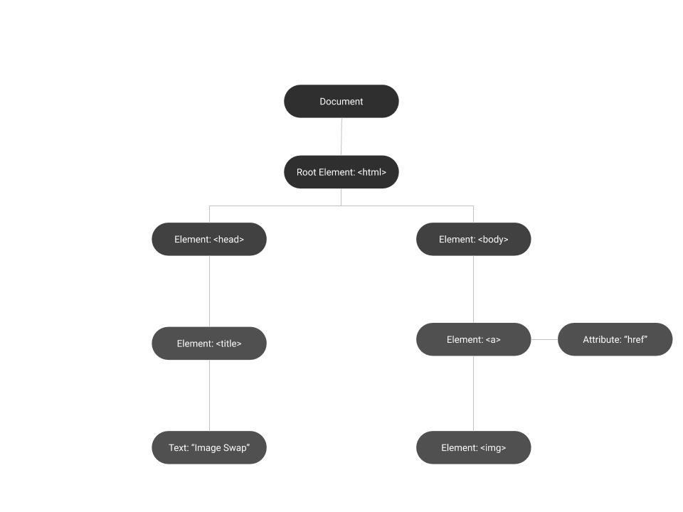

- Task 0 of this practical involved updating both the learning log site and
practical 0
to make them accessible. I've added alt tags to all images, ids and labels to all checkboxes/radio buttons.
In addition to this, I've also updated the table with appropriate scope attributes and a summary.
I also re-ran the
w3 validator against the site again and the result
was that the site still complied with standards.
- Once I had implemented the HTML page required in Task 1, I used
Google Draw to draw up the DOM structure
of the page. See below:

- Following this task 1 part 4 requires the link tag and it's contents to be explained. The section of
highlighted text is a link tag. Within this link tag there are 2 pieces of conditional inline javascript. The
first piece of js "onmouseover="document.photo.src=’IMAGE_1.jpg';" means that when the link is hovered over,
image source is IMAGE_1. The second piece of JS is similar except for when the link is not hovered over,
the image source is IMAGE_0.
Within this link tag is an image tag, this contains several attributes; src, width, height, name and border.
src is the relative path to the image, width is the width of picture in pixels, height is height in pixels.
name is set to photo in this case which is then selected by document.photo.src , allowing the inline javascript
to modify the attribute src of the image tag called photo. The image also has a border of 0 pixels set.
- For Task 2 I was required to implement rollover links, these are present on the page for
Practical 2 below the images. I've made sure to use an
RGB value and text value across the links. I originally used pure Red Green Blue values eg #FF0000 for red but
found the colours harsh to look at so I went for a softer colour palette. I chose cornFlowerBlue as
my text colour for this task.